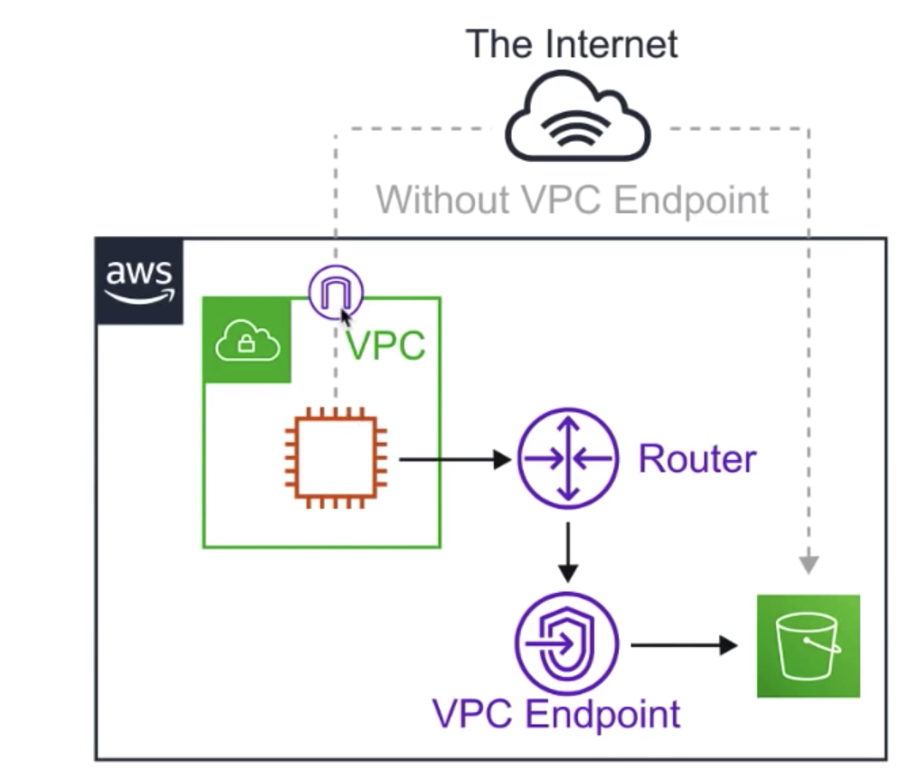

The current note and all other notes titled “AWS SAA Test prep” are based on the 10-hour free tutorial hosted by Andrew Brown and published by freeCodeCamp, which is accessible on YouTube through this link. Special thanks for the maker and publisher of the awesome video!
Provision a logically isolated section of AWS Cloud where you can launch AWS resources in a virtual network that you define.
Core components
Think of a AWS VPC as your own personal data centre.
Gives you complete control over you virtual networking environment.
- Internet Gateway
- Virtual Private Gateway
- Route tables: each subnet can only associated with one RT. The default RT can be deleted once it is not used by any RT.
- VPC Peering
- VPC Endpoints
- Customer Gateway
Key Features
- VPCs are region specific
- 5 VPC per region per account
- 200 subnets per VPC
- each account each region comes with a default VPC
- You can use IPv4 CIDR block and in addition IPv6 CIDR blocks
- Many services cost nothing: VPC, Route Table, NACL, Internet Gateway, Security Groups, Subnets, VPC peering, Gateway Endpoint
- Some services cost money: NAT gateway, VPC Endpoints, VPN Gateway, Customer Gateway, Interface Endpoint.
- DNS hostnames: when you create a VPC, it doesn’t have a DNS hostnames turned on by default. When you launch EC2 instances inside the VPC, if the DNS hostnames are turned on for the VPC, the EC2 will get a Public DNS.
Default VPC
- A VPC with a size /16 (172.31.0.0/16)
- Create a size /20 default subnet in each Availability Zone
- Create an Internet Gateway and connect it to the default VPC
- Create a default SG and associate with the default VPC
- Create a default NACL and associate with your default VPC
- Associate the default DHCP options set for your AWS account with the default VPC
- Automatically has a main route table.
The Dynamic Host Configuration Protocol (DHCP) is a network management protocol used on Internet Protocol networks whereby a DHCP server dynamically assigns an IP address and other network configuration parameters to each device on a network so they can communicate with other IP networks.
VPC Peering
allows you to connect one VPC with another over a direct network route using private IP addresses.
- Instances in peered VPCs behave just like they are on the same network.
- Connect VPCs across same/different AWS accounts and regions: Let VPCs in different regions talk to each other through VPC Peering Connection.
- Peering uses a Star Configuration: 1 Central VPC, 4 other VPCs
- No transitive peering: one to one connect, peering must take place directly between VPCs
- No overlapping CIDR blocks.
Internet Gateway
IGW does two things:
- Provide a target in your VPC route tables for internet-routable traffic
- Perform network address translation (NAT) for instances that have been assigned public IPv4 addresses.
Bastion/Jumpbox
Bastions are EC2 instances that are security harden. They are designed to help you gain access to your EC2 instances in your private subnets via SSH or RCP.
NAT gateway/instances are only intended for EC2 instances to gain outbound access to the internet for things like security updates. NATs cannot/should not be used as Bastions.
System Manager’s Session Manager replaces the need for Bastions.
Direct Connect
AWS Direct Connect is AWS solution for establishing dedicated network connections from on-premises locations to AWS.
Helps reduce network costs and increase bandwidth throughput.
Provides a more consistent network experience than a typical internet-based connection.
VPC Endpoints
VPC Endpoints allow you to privately connect your VPC to other AWS services.

- Instances in the VPC do not need a public IP address to communicate with service resources.
- Traffic between your VPC and other services do not leave the AWS network - no need to go through the Internet.
- VPC Endpoints are horizontally scaled, redundant and highly available VPC component.
- Allows secure communication between instances and services: without adding availability risks or bandwidth constraints on your traffic.
There are two types of VPC endpoints: Interface Endpoints and Gateway endpoints.Interface Endpoints
Interface Endpoints are Elastic Network Interfaces (ENI) with a private IP address. They serve as an entry point for traffic going to a supported service.
Interface Endpoints are powered by AWS PrivateLink (access services hosted on AWS to keep your network traffic within the AWS network).
Interface Endpoints support the following AWS services: - API Gateway
- CloudFormation
- CloudWatch
- Kinesis
- SageMaker
- Codebuild
- AWS Config
- EC2 API
- ELB API
- AWS KMS
- Secrets Manager
- Security Token Service
- Service Catalog
- SNS
- SQS
- Systems Manager
- Marketplace Partner Services
- Endpoint Services in other AWS accounts
Gateway Endpoints
AWS Gateway Endpoint currently only supports two services: - Amazon S3
- DynamoDB
A Gateway Endpoint is a gateway that is a target for a specific route in your route table, used for traffic destined for a supported AWS service.
VPC Endpoint Summary
Interface Endpoints cost money, Gateway Endpoints are free.
Interface Endpoints uses and Elastic Network Interface (ENI) with a Private IP (powered by AWS PrivateLink)
VPC Flow Logs
VPC Flow Logs allow you to capture IP traffic information in -and-out of Network Interfaces within your VPC.
All log data is stored using Amazon CloudWatch Logs/S3 bucket
After a Flow Log is created it can be viewed in detail with CloudWatch Logs.
Flow Logs can be created for:
- VPC
- Subnets
- Network Interface
Flow log contains source IPv4/IPv6 address and destination IPv4/IPv6 address.
You cannot enable Flow Logs for VPCs peered with you VPC unless its in the same account.
VPC Flow Logs cannot be tagged like other AWS resources.
You cannot change the configuration of the Flow Log once it is created. You can only delete it.
Some instance traffic is not monitored:
- Windows license activation traffic from instances
- Instance traffic generated by contacting the AWS DNS servers
- Traffic to and from the instance metadata address (169.254.169.254)
- DHCP Traffic - DHCP server assigning IP addresses and other parameters to the device
- Any traffic to the reserved IP address of the default VPC router.
Stateful and Stateless filtering
Stateful filtering tracks the origin of a request and can automatically allow the reply to the request to be returned to the originating computer. For example, a stateful filter that allows inbound traffic to tcp port 80 on a webserver will allow the return traffic, usually on a high numbered port (e.g. destination tcp port 63,912) to pass through the stateful filter between the client and the webserver. The filtering device maintains a state table that tracks the origin and destination port numbers and IP addresses. Only one rule is required on the filtering device: allow traffic inbound to the web server on tcp port 80).
Stateless filtering, on the other hand, only examines the source or destination IP address and the destination port, ignoring whether the traffic is a new request or a reply to a request. In the above example, two rules would need to be implemented on the filtering device: one rule to allow traffic inbound to the web server on tcp port 80, and another rule to allow outbound traffic from the webserver (tcp port range 49,152 through 65,535).
If you want to deny a certain IP address block, use NACL. Security Group only has ALLOW rules.
NAT
NAT is the method of re-mapping one IP address space into another.
In the case of VPC, it is used to remap the private IP addresses of instances in a private subnet so that it will have outbound access to the Internet.
NAT instance
When creating a NAT instance you must disable source and destination checks on the instance.
Size of the instance determines how much traffic can be handled.
You must have a route out of the private subnet to the NAT instance.
High Availability of a NAT instance can be achieved using Autoscaling Groups, multiple subnets in different AZs, and automatic failover between them using a script.
NAT gateway
managed by AWS
automatically assigned a public IP address
You can only have 1 NAT Gateway inside 1 AZ. (Cannot span AZs)
Start at 5 Gbps and scales up to 45 Gbps.
Charged by hour + data processing